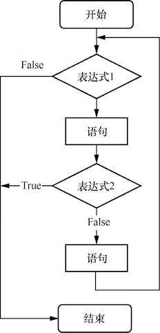
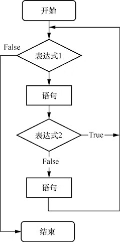
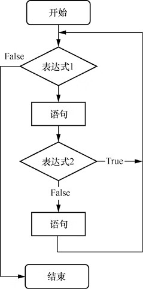

首页 > 编程笔记
C# break和continue语句：跳出循环
C# 语言中 break 和 continue 语句用来跳出循环，也即提前提前结束循环。
break 语句通常应用在 switch、while、do…while 或 for 语句中，当多个 switch、while、do…while 或 for 语句互相嵌套时，break 语句只应用于最里层的语句。
break 语句的语法格式如下：
执行 1 到 100 的累加运算，当 iNum 的值为 50 时退出循环，代码如下：
1到49的累加结果是1225
当多个 while、do…while 或 for 语句互相嵌套时，continue 语句只能使直接包含它的循环开始下一次新的循环。
continue语句的语法格式如下：
在 for 循环中使用 continue 语句计算 1 到 100 的偶数和，代码如下：
1到100的偶数的和：2550
例如，有以下两个循环结构：
C# break 语句
在学习条件语句时，我们知道使用 break 语句可以跳出 switch 多分支结构。实际上，break 语句还可以用来跳出循环体，执行循环体之外的语句。break 语句通常应用在 switch、while、do…while 或 for 语句中，当多个 switch、while、do…while 或 for 语句互相嵌套时，break 语句只应用于最里层的语句。
break 语句的语法格式如下：
break;
说明
break 语句一般会结合 if 语句进行搭配使用，表示在某种条件下循环结束。执行 1 到 100 的累加运算，当 iNum 的值为 50 时退出循环，代码如下：
static void Main(string[] args)
{
int iNum = 1; //iNum从1到100递增
int iSum = 0; //记录每次累加后的结果
while (iNum <= 100) //iNum <= 100 是循环条件
{
iSum += iNum; //把每次的iNum值累加到上次累加的结果中
iNum++; //每次循环iNum的值加1
if (iNum == 50) //判断iNum的值是否为50
break; //退出循环
}
Console.WriteLine("1到49的累加结果是" + iSum); //输出结果
Console.ReadLine();
}
程序运行结果如下：1到49的累加结果是1225
C# continue 语句
C# continue 语句的作用是结束本次循环，它通常应用于 while、do…while 或 for 语句中，用来忽略循环体内位于它后面的代码而直接开始下一次的循环。当多个 while、do…while 或 for 语句互相嵌套时，continue 语句只能使直接包含它的循环开始下一次新的循环。
continue语句的语法格式如下：
continue;
说明
continue 语句一般会结合 if 语句进行搭配使用，表示在某种条件下不执行后面的语句，直接开始下一次的循环。在 for 循环中使用 continue 语句计算 1 到 100 的偶数和，代码如下：
static void Main(string[] args)
{
int iSum = 0; //定义变量，用来存储偶数的和
int iNum = 1; //定义变量，用来作为循环变量
for (; iNum <= 100; iNum++) //执行for循环
{
if (iNum % 2 == 1) //判断是否为偶数
continue; //继续执行下一次循环
iSum += iNum; //记录偶数和
}
Console.WriteLine("1到100的偶数的和：" + iSum); //输出偶数的和
Console.ReadLine();
}
程序运行结果如下：1到100的偶数的和：2550
C# continue 和 break 语句的区别
continue 和 break 语句的区别是：- continue 语句只结束本次循环，而不终止整个循环；
- 而 break 语句是结束整个循环过程，开始执行循环之后的语句。
例如，有以下两个循环结构：
//循环结构1
while(表达式1)
{
if(表达式2)
break;
}
//循环结构2
while(表达式1)
{
if(表达式2)
continue;
}
这两个循环结构的执行流程分别如图6和图7所示。

图6：C# break 语句的执行流程

图7：C# continue 语句的执行流程
图6：C# break 语句的执行流程

图7：C# continue 语句的执行流程
关注公众号「站长严长生」，在手机上阅读所有教程，随时随地都能学习。内含一款搜索神器，免费下载全网书籍和视频。

微信扫码关注公众号